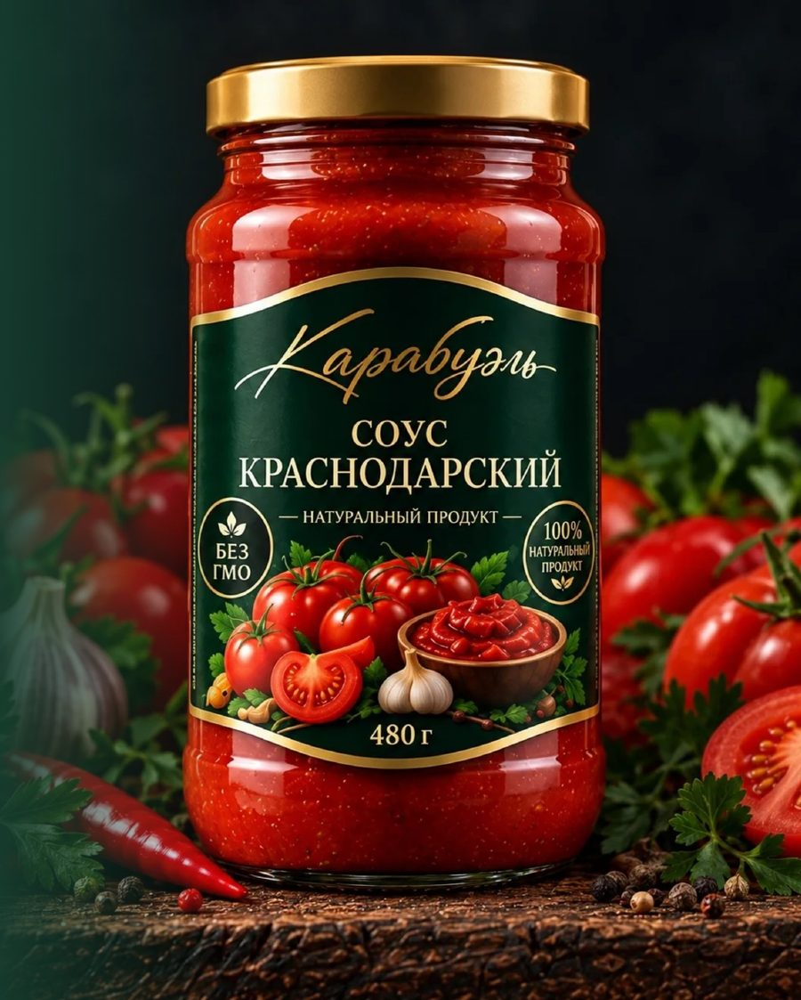

Базарно-Карабулакский консервный завод
Овощные консервы, соусы и натуральные соки из Саратовской области. Делаем с 1960 года, без консервантов, красителей и ГМО.

Завод в цифрах
Базарный Карабулак
Завод стоит в 100 км к северу от Саратова. Это одно из крупнейших предприятий посёлка (около 9,4 тыс. жителей) и объект промышленного туризма области. Рядом автотрассы и ж/д станция Карабулак.
Как мы работаем
Ассортимент
Консервы и соусы в банке 480 г, натуральные соки в стеклянной бутылке.
Также в каталоге: закуски «Новая» и «Воронежская», солянка, фасоль натуральная и с грибами, яблоки протёртые, тыквенный напиток. Наличие и фасовка подтверждаются при заказе.
Овощи Саратовской области
Выращиваем овощи на своих полях в Базарном Карабулаке и работаем с постоянными фермерами. Каждая партия проходит контроль качества. Закладываем новые поля под кабачки в Энгельсском районе.
городов России, от Санкт-Петербурга до Красноярска.
Партнёрам и оптовикам
Работаем с розничными сетями, дистрибьюторами и оптовыми покупателями. Подключили маркировку «Честный знак» для федеральных сетей.
Скачать презентацию и прайсГде купить
Контакты
- Генеральный директор
- Симаченко Илья Игоревич
- Телефон
- +7 (917) 316-03-96
- tdbkkz@bk.ru
- Адрес
- Саратовская обл., р.п. Базарный Карабулак, ул. Новая, 29